Selected work / Case study 01
Amwag Travel — booking a seat should feel this simple.
A bilingual mobile experience for intercity transportation: destinations, office hierarchies, trip types, seat maps, payments, and tickets — designed so the passenger never feels the complexity underneath.
Amwag operates intercity transportation with a network of offices, destinations, and trip types. Booking historically depended on phone calls and physical offices — which works, but caps how many passengers the operation can serve and how predictably seats fill.
The mobile application had to become the primary booking channel for a customer base that is bilingual, mobile-first, and used to consumer apps that just work.
The operation's structure is genuinely complex: destinations map to offices, offices to routes, routes to trip types and schedules, and every departure carries its own seat inventory and pricing. Staff can hold that model in their heads. Customers cannot — and shouldn't have to.
- Bookings bottlenecked on staff availability and office hours.
- Seat inventory lived in the operation, invisible to the customer.
- Every booking rule the customer had to learn was a booking lost.
A passenger has one job: get from here to there, on a seat they chose, with a ticket they trust. Anything that interrupts that — unclear office hierarchies, ambiguous trip types, payment anxiety, lost tickets — breaks confidence in the whole service.
And it has to work identically in Arabic and English. Not translated as an afterthought: designed for RTL from the first wireframe.
- The app must mirror real operational structure — offices and schedules are facts, not design choices.
- Full bilingual parity: every flow, state, and edge case in both directions of text.
- Seat selection must reflect live availability to avoid double-booking.
- Customers range widely in tech comfort — flows must survive first-time users.
I owned the product end to end: translating the transportation workflow into a product model, architecting the UX, designing the bilingual UI system, and directing the technical implementation — including how booking state, seat inventory, and tickets flow through the system.
The core decision: the customer never navigates the company's structure — the app translates it. Passengers think "destination → date → seat," so that became the spine of the experience. Office hierarchies, routes, and trip types resolve behind the scenes and surface only when they change the passenger's decision.
Everything else was prioritised against one question: does this step move the passenger closer to a confirmed seat?
The passenger's mental model — five steps, no org charts.
The booking flow is a state machine, and the UX treats it that way: each step validates before the next unlocks, and the passenger can always see where they are and step back without losing progress.
Structural decisions
- Destination-first search — offices are resolved from the destination, never chosen from an abstract list.
- Seat map as the centrepiece — a visual map with live availability turned the most complex step into the most satisfying one.
- Tickets as persistent objects — bookings live in a wallet with clear states: upcoming, used, cancelled.
- Mirrored layouts — every screen was designed in RTL and LTR simultaneously, so neither language feels like the translation.
The visual language is calm and confident: generous spacing, a restrained palette, and typography tuned separately for Arabic and Latin scripts so both feel native. Progress is always visible; errors are written in human language; and the confirmed-ticket moment gets deliberate visual weight — it's the emotional payoff of the whole flow.
Onboarding & account
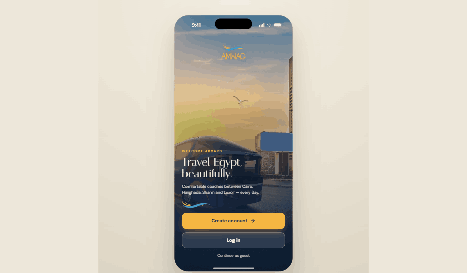
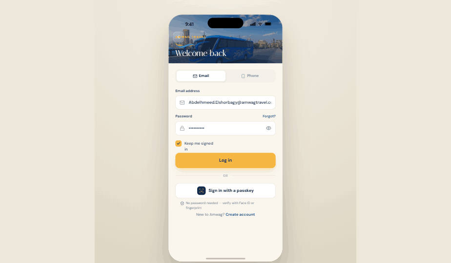
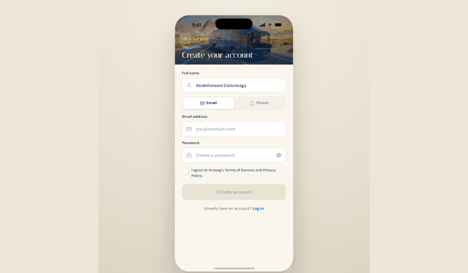
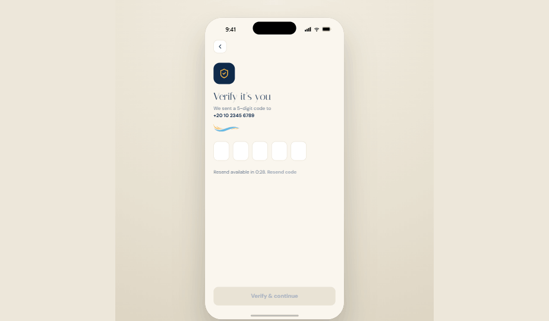
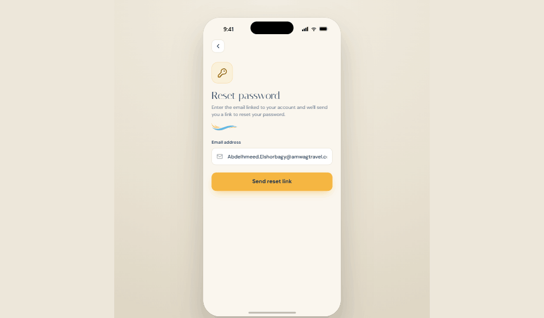
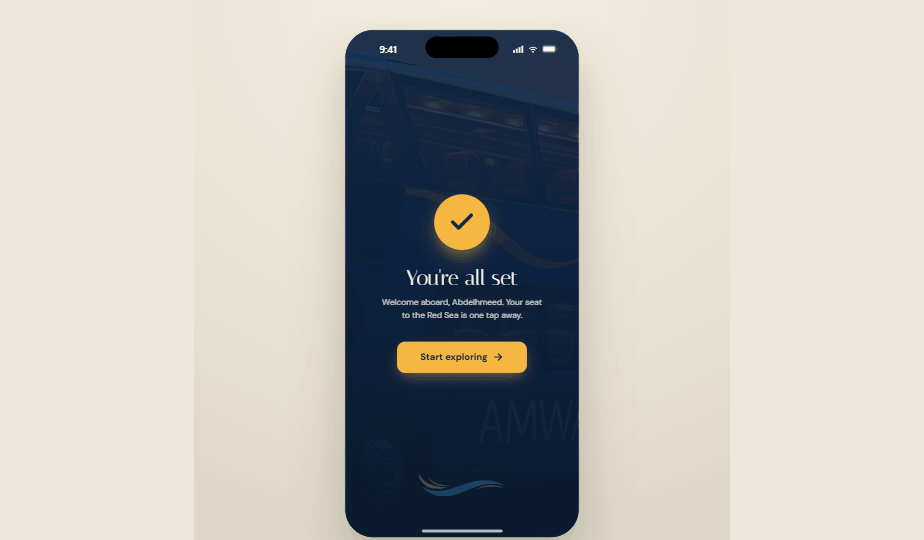
The booking flow — destination to ticket
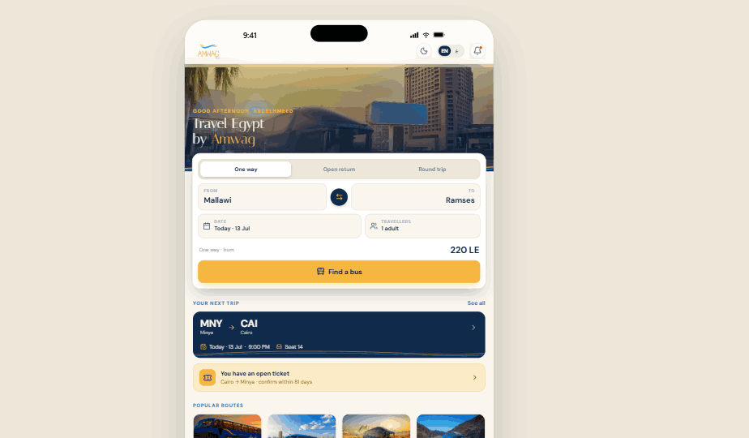
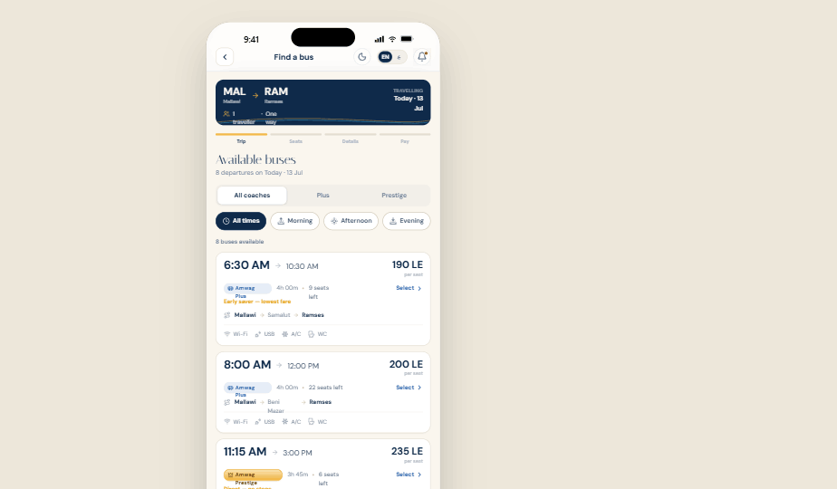
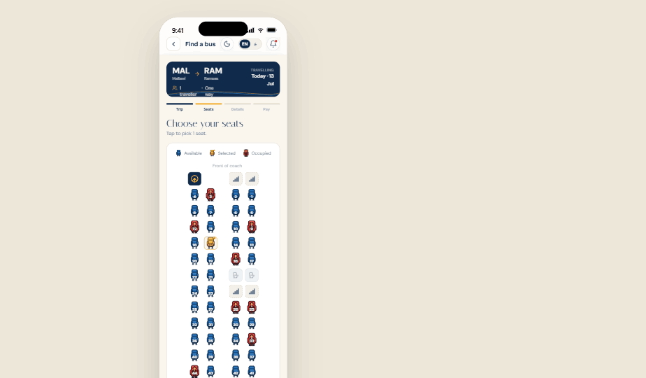
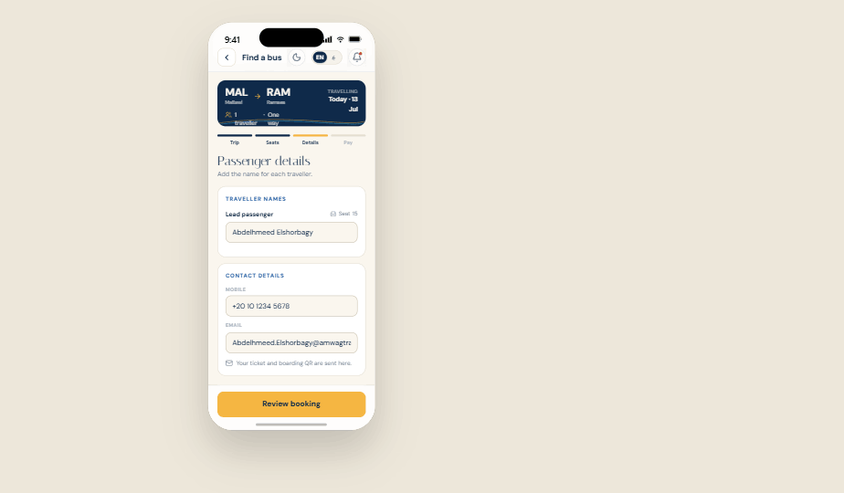
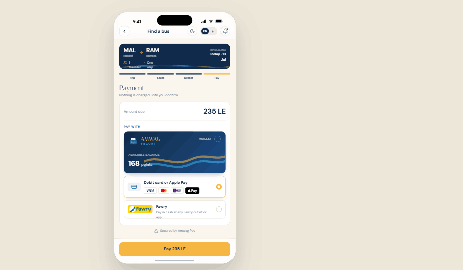
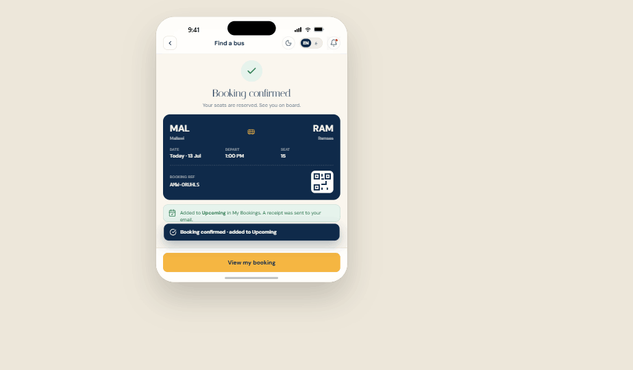
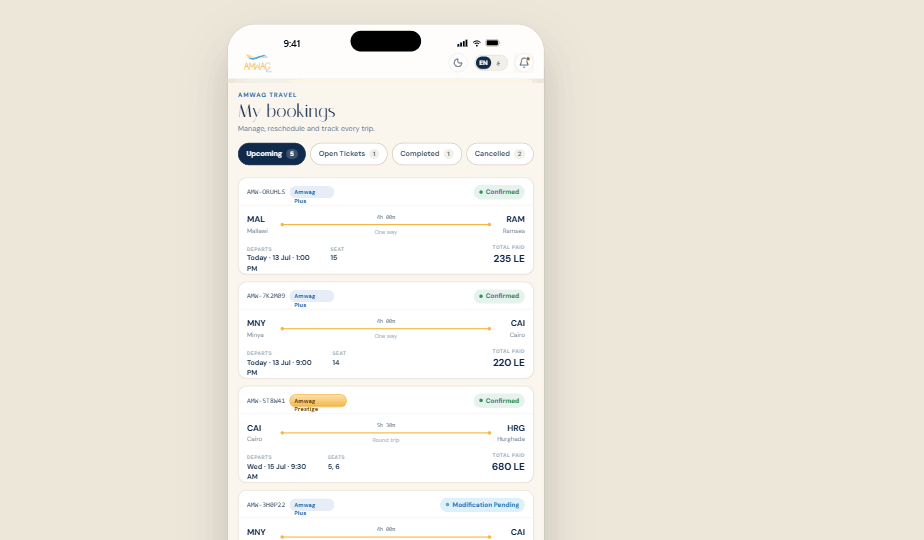
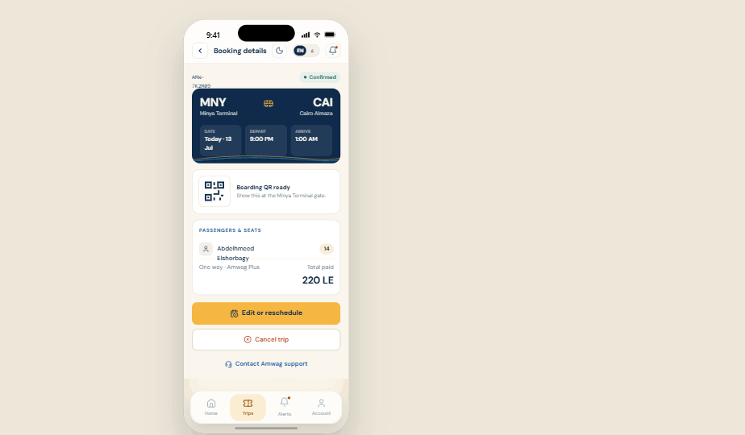
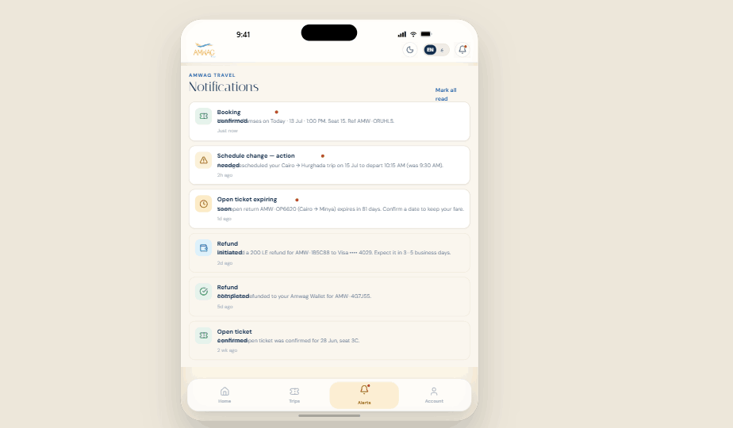
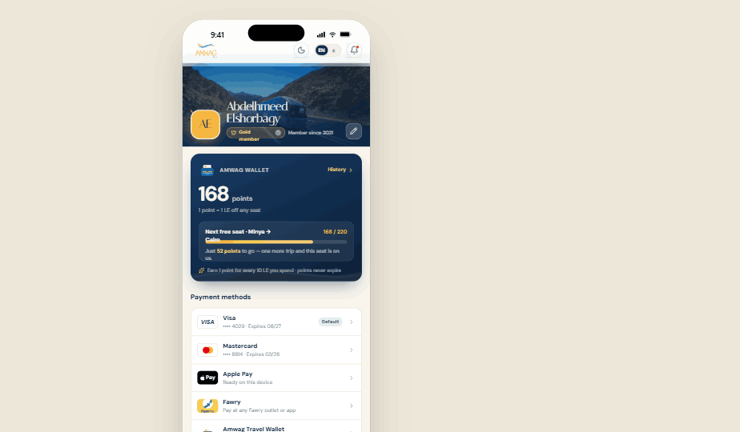
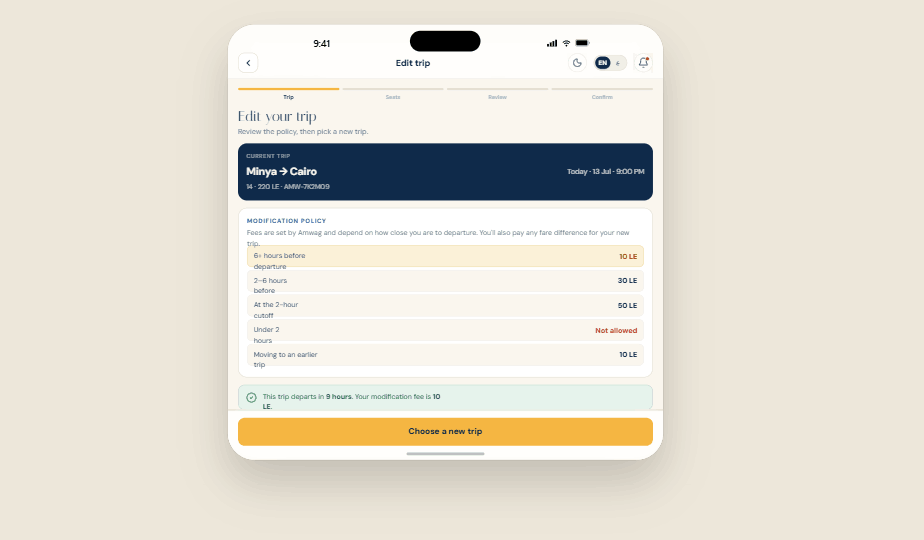
Every screen was designed in Arabic (RTL) and English (LTR) in parallel — neither language is the translation.
The implementation follows the same separation the UX promises: a clean booking API that owns availability and state, with the app as a fast, resilient client.
- Seat availability checked at selection and re-validated at payment to prevent double-booking.
- Booking state modelled explicitly — pending, held, paid, issued, cancelled — so every screen renders from one source of truth.
- Localisation built into the data layer, not bolted onto the UI.
Fidelity vs. simplicity. The hardest calls were about what not to show. Exposing the full office/route model would have been "accurate" — and unusable. We collapsed it, and accepted that a few operational edge cases route to staff instead of self-service.
Bilingual parity costs real effort. Designing RTL-first roughly doubles layout thinking early on. It was the right trade: retrofitting RTL later is where bilingual apps usually break.
Qualitative outcomes — stated honestly, without invented numbers:
Self-service bookingA complete phone-free path from destination to confirmed seat, in either language.
Complexity absorbedOffice and route logic is handled by the system, not learned by the passenger.
A foundation, not a featureThe booking model supports new destinations and trip types without redesign.
Complex domains reward the discipline of choosing a single user mental model early and defending it. Every time we were tempted to expose internal structure "for flexibility," the flow got worse. The system's job is to be complicated so the passenger doesn't have to be.